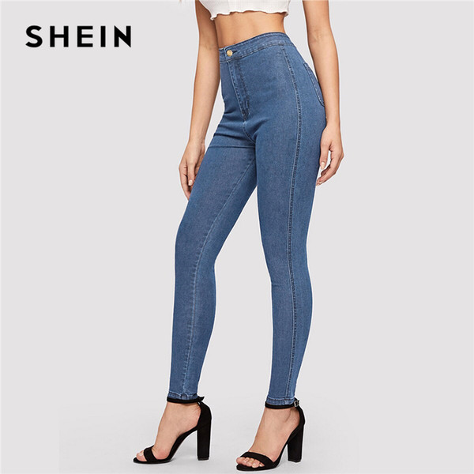
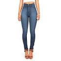
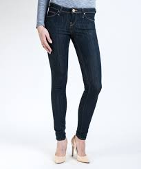
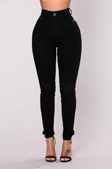
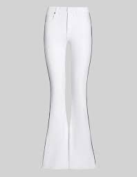
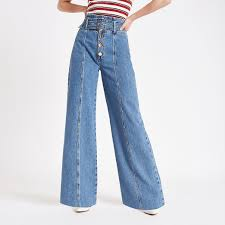
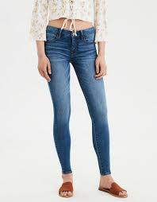

Skinny jeans
talla:34-36-38-40-42 Shein
Mom jeans
talla:34-36-38-40-42 Zara

High waisted jeans
talla:34-36-38-40-42 Pull&bear

Slim jeans
talla:36-40-42 Zara

Black high waisted jeans
talla:34-38-42 Shein

White bootcut jeans
talla:34-36-38-40-42 Stradivarius

Wide blue jeans
talla:34-36-38-40 Bershka

Jeggins
talla:34-36-38-40-42 Mango
Sobre nuestra página web

¿Para qué sirve?
En esta página iremos informando de las últimas tendencias en ropa y en qué tiendas podréis encontrarlas, además de informaros de qué tallas están disponibles. ¡Esperamos que os sea útil!